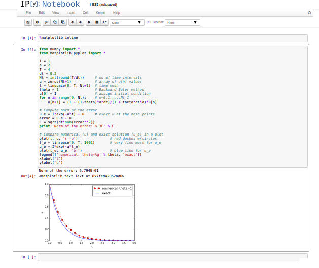

Study guide: Scientific software engineering with a simple ODE model as example
Mar 25, 2015
From flat program to module with functions
Mathematical model problem
$$
\begin{align*}
u'(t) &= -au(t), \quad t \in (0,T]\\
u(0) &= I
\end{align*}
$$
Solution by \( \theta \)-scheme:
$$
\begin{equation*}
u^{n+1} = \frac{1 - (1-\theta) a\Delta t}{1 + \theta a\Delta t}u^n
\end{equation*}
$$
\( \theta =0 \): Forward Euler, \( \theta =1 \): Backward Euler, \( \theta =1/2 \): Crank-Nicolson (midpoint method)
Many will make a rough, flat program first
from numpy import *
from matplotlib.pyplot import *
A = 1
a = 2
T = 4
dt = 0.2
N = int(round(T/dt))
y = zeros(N+1)
t = linspace(0, T, N+1)
theta = 1
y[0] = A
for n in range(0, N):
y[n+1] = (1 - (1-theta)*a*dt)/(1 + theta*dt*a)*y[n]
y_e = A*exp(-a*t) - y
error = y_e - y
E = sqrt(dt*sum(error**2))
print 'Norm of the error: %.3E' % E
plot(t, y, 'r--o')
t_e = linspace(0, T, 1001)
y_e = A*exp(-a*t_e)
plot(t_e, y_e, 'b-')
legend(['numerical, theta=%g' % theta, 'exact'])
xlabel('t')
ylabel('y')
show()
There are major issues with this solution
- The notation in the program does not correspond exactly to
the notation in the mathematical problem: the solution is called
yand corresponds to \( u \) in the mathematical description, the variableAcorresponds to the mathematical parameter \( I \),Nin the program is called \( N_t \) in the mathematics. - There are no comments in the program.
New flat program
from numpy import *
from matplotlib.pyplot import *
I = 1
a = 2
T = 4
dt = 0.2
Nt = int(round(T/dt)) # no of time intervals
u = zeros(Nt+1) # array of u[n] values
t = linspace(0, T, Nt+1) # time mesh
theta = 1 # Backward Euler method
u[0] = I # assign initial condition
for n in range(0, Nt): # n=0,1,...,Nt-1
u[n+1] = (1 - (1-theta)*a*dt)/(1 + theta*dt*a)*u[n]
# Compute norm of the error
u_e = I*exp(-a*t) - u # exact u at the mesh points
error = u_e - u
E = sqrt(dt*sum(error**2))
print 'Norm of the error: %.3E' % E
# Compare numerical (u) and exact solution (u_e) in a plot
plot(t, u, 'r--o') # red dashes w/circles
t_e = linspace(0, T, 1001) # very fine mesh for u_e
u_e = I*exp(-a*t_e)
plot(t_e, u_e, 'b-') # blue line for u_e
legend(['numerical, theta=%g' % theta, 'exact'])
xlabel('t')
ylabel('u')
show()
Such flat programs are ideal for IPython notebooks!

But: Further development of such flat programs require many scattered edits - easy to make mistakes!
def solver(I, a, T, dt, theta):
"""Solve u'=-a*u, u(0)=I, for t in (0,T] with steps of dt."""
dt = float(dt) # avoid integer division
Nt = int(round(T/dt)) # no of time intervals
T = Nt*dt # adjust T to fit time step dt
u = np.zeros(Nt+1) # array of u[n] values
t = np.linspace(0, T, Nt+1) # time mesh
u[0] = I # assign initial condition
for n in range(0, Nt): # n=0,1,...,Nt-1
u[n+1] = (1 - (1-theta)*a*dt)/(1 + theta*dt*a)*u[n]
return u, t
Call:
u, t = solver(I=1, a=2, T=4, dt=0.2, theta=0.5)
The DRY principle: Don't repeat yourself!
When implementing a particular functionality in a computer program, make sure this functionality and its variations are implemented in just one piece of code. That is, if you need to revise the implementation, there should be one and only one place to edit. It follows that you should never duplicate code (don't repeat yourself!), and code snippets that are similar should be factored into one piece (function) and parameterized (by function arguments).
Make sure any program file is a valid Python module
- Module requires code to be divided into functions :-)
- Why module? Other programs can import the functions
from decay import solver
# Solve a decay problem
u, t = solver(I=1, a=2, T=4, dt=0.2, theta=0.5)
or prefix function names by the module name:
import decay
# Solve a decay problem
u, t = decay.solver(I=1, a=2, T=4, dt=0.2, theta=0.5)
The requirements of a module are so simple
- The filename without
.pymust be a valid Python variable name. - The main program must be executed (through statements or a function call) in the test block.
The test block is normally placed at the end of a module file:
if __name__ == '__main__':
# Statements
If the file is imported, the if test fails and no main program is run, otherwise, the file works as a program
The module file decay.py for our example
from numpy import *
from matplotlib.pyplot import *
def solver(I, a, T, dt, theta):
...
def exact_solution(t, I, a):
return I*exp(-a*t)
def experiment_compare_numerical_and_exact():
I = 1; a = 2; T = 4; dt = 0.4; theta = 1
u, t = solver(I, a, T, dt, theta)
t_e = linspace(0, T, 1001) # very fine mesh for u_e
u_e = exact_solution(t_e, I, a)
plot(t, u, 'r--o') # dashed red line with circles
plot(t_e, u_e, 'b-') # blue line for u_e
legend(['numerical, theta=%g' % theta, 'exact'])
xlabel('t')
ylabel('u')
plotfile = 'tmp'
savefig(plotfile + '.png'); savefig(plotfile + '.pdf')
error = exact_solution(t, I, a) - u
E = sqrt(dt*sum(error**2))
print 'Error norm:', E
if __name__ == '__main__':
experiment_compare_numerical_and_exact()
Complete file: decay.py
The module file decay.py for our example w/prefix
import numpy as np
import matplotlib.pyplot as plt
def solver(I, a, T, dt, theta):
...
def exact_solution(t, I, a):
return I*np.exp(-a*t)
def experiment_compare_numerical_and_exact():
I = 1; a = 2; T = 4; dt = 0.4; theta = 1
u, t = solver(I, a, T, dt, theta)
t_e = np.linspace(0, T, 1001) # very fine mesh for u_e
u_e = exact_solution(t_e, I, a)
plt.plot(t, u, 'r--o') # dashed red line with circles
plt.plot(t_e, u_e, 'b-') # blue line for u_e
plt.legend(['numerical, theta=%g' % theta, 'exact'])
plt.xlabel('t')
plt.ylabel('u')
plotfile = 'tmp'
plt.savefig(plotfile + '.png'); plt.savefig(plotfile + '.pdf')
error = exact_solution(t, I, a) - u
E = np.sqrt(dt*np.sum(error**2))
print 'Error norm:', E
if __name__ == '__main__':
experiment_compare_numerical_and_exact()
How do we add code for comparing schemes visually?

Think of edits in the flat program that are required to produce this plot (!)
We just add a new function with the tailored plotting
def experiment_compare_schemes():
"""Compare theta=0,1,0.5 in the same plot."""
I = 1; a = 2; T = 4; dt = 0.4
legends = []
for theta in [0, 1, 0.5]:
u, t = solver(I, a, T, dt, theta)
plt.plot(t, u, '--o') # dashed lines with circles
legends.append('theta=%g' % theta)
t_e = np.linspace(0, T, 1001) # very fine mesh for u_e
u_e = exact_solution(t_e, I, a)
plt.plot(t_e, u_e, 'b-') # blue line for u_e
legends.append('exact')
plt.legend(legends, loc='upper right')
plotfile = 'tmp'
plt.savefig(plotfile + '.png'); plt.savefig(plotfile + '.pdf')
The comparison
Prefixing imported functions by the module name
MATLAB-style names (linspace, plot):
from numpy import *
from matplotlib.pyplot import *
Python community convention is to prefix with module name
(np.linspace, plt.plot):
import numpy as np
import matplotlib.pyplot as plt
Creating user interfaces
- Never edit the program to change input!
- Set input data on the command line or in a graphical user interface
- How is explained next
Accessing command-line arguments
- All command-line arguments are available in
sys.argv -
sys.argv[0]is the program -
sys.argv[1:]holds the command-line arguments - Method 1: fixed sequence of parameters on the command line
- Method 2:
--option valuepairs on the command line (with default values)
Terminal> python myprog.py 1.5 2 0.5 0.8 0.4
Terminal> python myprog.py --I 1.5 --a 2 --dt 0.8 0.4
Reading a sequence of command-line arguments
Required input:
- \( I \)
- \( a \)
- \( T \)
- name of scheme (FE, BE, CN)
- a list of \( \Delta t \) values
Give these on the command line in correct sequence
Terminal> python decay_cml.py 1.5 0.5 4 CN 0.1 0.2 0.05
Implementation
def define_command_line_options():
import argparse
parser = argparse.ArgumentParser()
parser.add_argument(
'--I', '--initial_condition', type=float,
default=1.0, help='initial condition, u(0)',
metavar='I')
parser.add_argument(
'--a', type=float, default=1.0,
help='coefficient in ODE', metavar='a')
parser.add_argument(
'--T', '--stop_time', type=float,
default=1.0, help='end time of simulation',
metavar='T')
parser.add_argument(
'--scheme', type=str, default='CN',
help='FE, BE, or CN')
parser.add_argument(
'--dt', '--time_step_values', type=float,
default=[1.0], help='time step values',
metavar='dt', nargs='+', dest='dt_values')
return parser
Note:
-
sys.argv[i]is always a string - Must explicitly convert to (e.g.)
floatfor computations - List comprehensions make lists:
[expression for e in somelist]
Working with an argument parser
Set option-value pairs on the command line if the default value is not suitable:
Terminal> python decay_argparse.py --I 1.5 --a 2 --dt 0.8 0.4
Code:
def read_command_line_argparse():
parser = define_command_line_options()
args = parser.parse_args()
scheme2theta = {'BE': 1, 'CN': 0.5, 'FE': 0}
data = (args.I, args.a, args.T, scheme2theta[args.scheme],
args.dt_values)
return data
(metavar is the symbol used in help output)
A graphical user interface

Normally very much programming required - and much competence on graphical user interfaces.
Here: use a tool to automatically create it in a few minutes (!)
The Parampool package
- Parampool is a package for handling a large pool of input parameters in simulation programs
- Parampool can automatically create a sophisticated web-based graphical user interface (GUI) to set parameters and view solutions
The forthcoming material aims at those with particular interest in equipping their programs with a GUI - others can safely skip it.
Making a compute function
- Key concept: a compute function that takes all input data as arguments and returning HTML code for viewing the results (e.g., plots and numbers)
- What we have: decay_plot.py
-
mainfunction carries out simulations and plotting for a series of \( \Delta t \) values - Goal: steer and view these experiments from a web GUI
- What to do:
- create a compute function
- call
parampoolfunctionality
The compute function must return HTML code
def main_GUI(I=1.0, a=.2, T=4.0,
dt_values=[1.25, 0.75, 0.5, 0.1],
theta_values=[0, 0.5, 1]):
# Build HTML code for web page. Arrange plots in columns
# corresponding to the theta values, with dt down the rows
theta2name = {0: 'FE', 1: 'BE', 0.5: 'CN'}
html_text = '<table>\n'
for dt in dt_values:
html_text += '<tr>\n'
for theta in theta_values:
E, html = compute4web(I, a, T, dt, theta)
html_text += """
<td>
<center><b>%s, dt=%g, error: %.3E</b></center><br>
%s
</td>
""" % (theta2name[theta], dt, E, html)
html_text += '</tr>\n'
html_text += '</table>\n'
return html_text
Generating the user interface
Make a file decay_GUI_generate.py:
from parampool.generator.flask import generate
from decay import main_GUI
generate(main_GUI,
filename_controller='decay_GUI_controller.py',
filename_template='decay_GUI_view.py',
filename_model='decay_GUI_model.py')
Running decay_GUI_generate.py results in
-
decay_GUI_model.pydefines HTML widgets to be used to set input data in the web interface, -
templates/decay_GUI_views.pydefines the layout of the web page, -
decay_GUI_controller.pyruns the web application.
Good news: we only need to run decay_GUI_controller.py
and there is no need to look into any of these files!
Running the web application
Start the GUI
Terminal> python decay_GUI_controller.py
Open a web browser at 127.0.0.1:5000
More advanced use
- The compute function can have arguments of type float, int, string, list, dict, numpy array, filename (file upload)
- Alternative: specify a hierarchy of input parameters with name, default value, data type, widget type, unit (m, kg, s), validity check
- The generated web GUI can have user accounts with login and storage of results in a database
Doctests
Doc strings can be equipped with interactive Python sessions for demonstrating usage and automatic testing of functions.
def solver(I, a, T, dt, theta):
"""
Solve u'=-a*u, u(0)=I, for t in (0,T] with steps of dt.
>>> u, t = solver(I=0.8, a=1.2, T=2, dt=0.5, theta=0.5)
>>> for t_n, u_n in zip(t, u):
... print 't=%.1f, u=%.14f' % (t_n, u_n)
t=0.0, u=0.80000000000000
t=0.5, u=0.43076923076923
t=1.0, u=0.23195266272189
t=1.5, u=0.12489758761948
t=2.0, u=0.06725254717972
"""
...
Running doctests
Automatic check that the code reproduces the doctest output:
Terminal> python -m doctest decay.py
Limit the number of digits in the output in doctests! Otherwise, round-off errors on a different machine may ruin the test.
Unit testing with nose
- Nose and pytest are a very user-friendly testing frameworks
- Based on unit testing
- Identify (small) units of code and test each unit
- Nose automates running all tests
- Good habit: run all tests after (small) edits of a code
- Even better habit: write tests before the code (!)
- Remark: unit testing in scientific computing is not yet well established
Basic use of nose and pytest
- Implement tests in test functions with names starting with
test_. - Test functions cannot have arguments.
- Test functions perform assertions on computed results
using
assertfunctions from thenose.toolsmodule. - Test functions can be in the source code files or be
collected in separate files
test*.py.
Example on a test function in the source code
Very simple module mymod (in file mymod.py):
def double(n):
return 2*n
Write test function in mymod.py:
def double(n):
return 2*n
def test_double():
n = 4
expected = 2*4
computed = double(n)
assert expected == computed
Running one of
Terminal> nosetests -s -v mymod
Terminal> py.test -s -v mymod
makes the framework run all test_*() functions in mymod.py.
Example on test functions in a separate file
Write the test in a separate file, say test_mymod.py:
import mymod
def test_double():
n = 4
expected = 2*4
computed = double(n)
assert expected == computed
Running one of
Terminal> nosetests -s -v
Terminal> py.test -s -v
makes the frameworks run all test_*() functions in all files
test*.py in the current directory and in all subdirectories (pytest)
or just those with names tests or *_tests (nose)
Start with test functions in the source code file. When the file contains many tests, or when you have many source code files, move tests to separate files.
Test function for solver
Use exact discrete solution of the \( \theta \) scheme as test:
$$ u^n = I\left(
\frac{1 - (1-\theta) a\Delta t}{1 + \theta a \Delta t}
\right)^n$$
def exact_discrete_solution(n, I, a, theta, dt):
"""Return exact discrete solution of the numerical schemes."""
dt = float(dt) # avoid integer division
A = (1 - (1-theta)*a*dt)/(1 + theta*dt*a)
return I*A**n
def test_exact_discrete_solution():
"""Check that solver reproduces the exact discr. sol."""
theta = 0.8; a = 2; I = 0.1; dt = 0.8
Nt = int(8/dt) # no of steps
u, t = solver(I=I, a=a, T=Nt*dt, dt=dt, theta=theta)
# Evaluate exact discrete solution on the mesh
u_de = np.array([exact_discrete_solution(n, I, a, theta, dt)
for n in range(Nt+1)])
# Find largest deviation
diff = np.abs(u_de - u).max()
tol = 1E-14
success = diff < tol
assert success
Can test that potential integer division is avoided too
If \( a \), \( \Delta t \), and \( \theta \) are integers, the formula for \( u^{n+1} \) in the solver function may lead to 0 because of unintended integer division.
def test_potential_integer_division():
"""Choose variables that can trigger integer division."""
theta = 1; a = 1; I = 1; dt = 2
Nt = 4
u, t = solver(I=I, a=a, T=Nt*dt, dt=dt, theta=theta)
u_de = np.array([exact_discrete_solution(n, I, a, theta, dt)
for n in range(Nt+1)])
diff = np.abs(u_de - u).max()
assert diff < 1E-14
Performning scientific experiments
Goals:
- Explore the behavior of a numerical method for an ODE
- Show how a program can set up, execute, and report scientific investigations
- Demonstrate how to write a scientific report
- Demonstrate various technologies for reports: HTML w/MathJax, LaTeX, Sphinx, IPython notebooks, ...
Model problem and numerical solution method
Problem:
$$
\begin{equation}
u'(t) = -au(t),\quad u(0)=I,\ 0 < t \leq T,
\tag{1}
\end{equation}
$$
Solution method (\( \theta \)-rule):
$$
u^{n+1} = \frac{1 - (1-\theta) a\Delta t}{1 + \theta a\Delta t}u^n,
\quad u^0=I\tp
$$
Plan for the experiments
For fixed \( I \), \( a \), and \( T \), we run the three schemes for various values of \( \Delta t \), and present in a report the following results:
- visual comparison of the numerical and exact solution in a plot for each \( \Delta t \) and \( \theta=0,1,\frac{1}{2} \),
- a table and a plot of the norm of the numerical error versus \( \Delta t \) for \( \theta=0,1,\frac{1}{2} \).
Available software
Terminal> python model.py --I 1.5 --a 0.25 --T 6 --dt 1.25 0.75 0.5
0.0 1.25: 5.998E-01
0.0 0.75: 1.926E-01
0.0 0.50: 1.123E-01
0.0 0.10: 1.558E-02
0.5 1.25: 6.231E-02
0.5 0.75: 1.543E-02
0.5 0.50: 7.237E-03
0.5 0.10: 2.469E-04
1.0 1.25: 1.766E-01
1.0 0.75: 8.579E-02
1.0 0.50: 6.884E-02
1.0 0.10: 1.411E-02
+ a set of plot files of numerial vs exact solution
Required new results
- Put plots together in table of plots
- Table of numerical error vs \( \Delta t \) and \( \theta \)
- Log-log convergence plot of numerical error vs \( \Delta t \) for \( \theta=0,1,0.5 \)
Must write a script exper1.py to automate running model.py
and generating these results
Terminal> python exper1.py 0.5 0.25 0.1 0.05
(\( \Delta t \) values on the comand line)
Reproducible science is key!
Let your scientific investigations be automated by scripts!
- Excellent documentation
- Trivial to re-run experiments
- Easy to extend investigations
What actions are needed in the script?
- Run
model.pyprogram with appropriate input - Interpret the output and make table and plot of numerical errors
- Combine plot files to new figures
Complete script: exper1.py
Run a program from a program with subprocess
Command to be run:
python model.py --I 1.2 --a 0.2 --T 8 -dt 1.25 0.75 0.5 0.1
Constructed in Python:
# Given I, a, T, and a list dt_values
cmd = 'python model.py --I %g --a %g --T %g' % (I, a, T)
dt_values_str = ' '.join([str(v) for v in dt_values])
cmd += ' --dt %s' % dt_values_str
Run under the operating system:
from subprocess import Popen, PIPE, STDOUT
p = Popen(cmd, shell=True, stdout=PIPE, stderr=STDOUT)
output, dummy = p.communicate()
failure = p.returncode
if failure:
print 'Command failed:', cmd; sys.exit(1)
Interpreting the output from an operating system command
The output if the previous command run by subprocess is in a string
output:
errors = {'dt': dt_values, 1: [], 0: [], 0.5: []}
for line in output.splitlines():
words = line.split()
if words[0] in ('0.0', '0.5', '1.0'): # line with E?
# typical line: 0.0 1.25: 7.463E+00
theta = float(words[0])
E = float(words[2])
errors[theta].append(E)
Combining plot files: PNG and PDF solutions
PNG:
Terminal> montage -background white -geometry 100% -tile 2x \
f1.png f2.png f3.png f4.png f.png
Terminal> convert -trim f.png f.png
Terminal> convert f.png -transparent white f.png
PDF:
Terminal> pdftk f1.pdf f2.pdf f3.pdf f4.pdf output tmp.pdf
Terminal> pdfnup --nup 2x2 --outfile tmp.pdf tmp.pdf
Terminal> pdfcrop tmp.pdf f.pdf
Terminal> rm -f tmp.pdf
Easy to build these commands in Python and execute them with subprocess
or os.system: os.system(cmd)
Making a report
- Scientific investigations are best documented in a report!
- A sample report
- How can we write such a report?
- First problem: what format should I write in?
- Plain HTML
- HTML with MathJax
- LaTeX PDF, based on LaTeX source
- Sphinx HTML, based on reStructuredText
- IPython notebook, Markdown, MediaWiki, ...
- DocOnce can generate LaTeX, HTML w/MathJax, Sphinx, IPython notebook, Markdown, MediaWiki, ... (DocOnce source for the examples above)
- Examples on different report formats
Publishing a complete project
- Make folder (directory) tree
- Keep track of all files via a version control system (Git!)
- Publish as private or public repository
- Utilize Bitbucket or GitHub
- See the intro to project hosting sites with version control